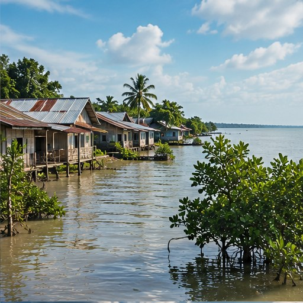

Peningkatan suhu
Rata-rata suhu global meningkat. Gelombang panas dapat menjadi lebih sering atau intens di banyak wilayah, dengan risiko bagi kesehatan dan produktivitas.
Dampak berbeda antarwilayah dan dipengaruhi oleh kondisi lokal, paparan, kerentanan, serta kesiapan masyarakat.

Rata-rata suhu global meningkat. Gelombang panas dapat menjadi lebih sering atau intens di banyak wilayah, dengan risiko bagi kesehatan dan produktivitas.
Atmosfer yang lebih hangat dapat menampung lebih banyak uap air, yang dapat memperkuat hujan ekstrem di sejumlah kondisi. Dampak banjir juga dipengaruhi tata ruang dan drainase.
Perubahan pola hujan, suhu, dan penguapan dapat memperburuk kekeringan atau tekanan terhadap pasokan air di sejumlah wilayah.
Pemuaian air laut saat menghangat dan mencairnya es daratan berkontribusi pada kenaikan muka laut, meningkatkan risiko banjir pesisir dan abrasi.
Panas ekstrem, kualitas udara, bencana, dan perubahan kondisi lingkungan dapat memengaruhi kesehatan fisik serta kesejahteraan masyarakat.
Perubahan suhu dan ketersediaan air memengaruhi tanaman, ternak, habitat, keanekaragaman hayati, serta mata pencaharian yang bergantung pada alam.
Indonesia memiliki wilayah pesisir yang luas dan banyak penduduk serta kegiatan ekonomi yang bergantung pada kondisi iklim. Perubahan pola hujan, banjir, kekeringan, panas, dan kenaikan muka laut dapat menimbulkan risiko yang berbeda antarwilayah.
Peristiwa tertentu tidak selalu dapat dijelaskan oleh perubahan iklim saja. Atribusi kejadian memerlukan kajian ilmiah yang mempertimbangkan faktor lain, seperti penggunaan lahan, kondisi infrastruktur, dan variabilitas alami.
Pengurangan risiko membutuhkan informasi lokal, perencanaan tata ruang, perlindungan ekosistem, infrastruktur yang tangguh, dan kesiapsiagaan masyarakat.
Fokus: memahami risiko, bukan menyalahkan satu faktorKelompok dapat memilih satu wilayah di Indonesia, kemudian menelaah catatan banjir, kekeringan, abrasi, atau dampak panas dengan data dari instansi resmi. Bandingkan informasi bahaya dengan kondisi paparan dan kerentanan masyarakat, lalu tuliskan keterbatasan analisis.
Untuk informasi cuaca dan iklim, mulai dari BMKG. Untuk kebencanaan dan situasi setempat, periksa otoritas daerah yang relevan.